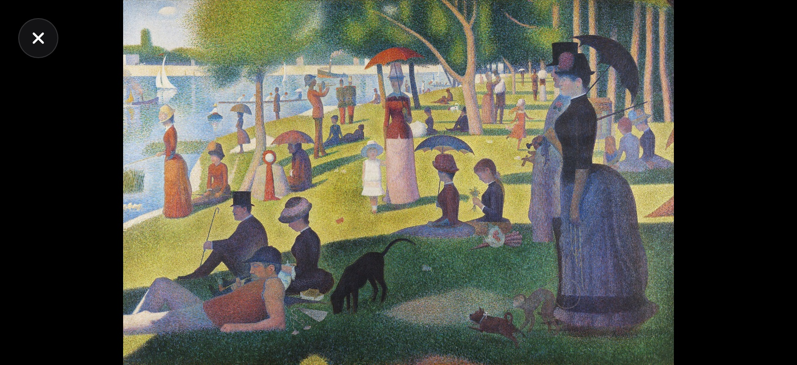
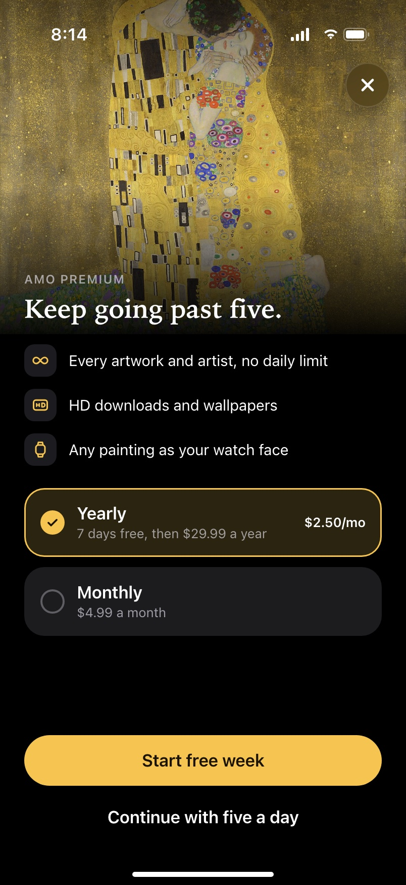
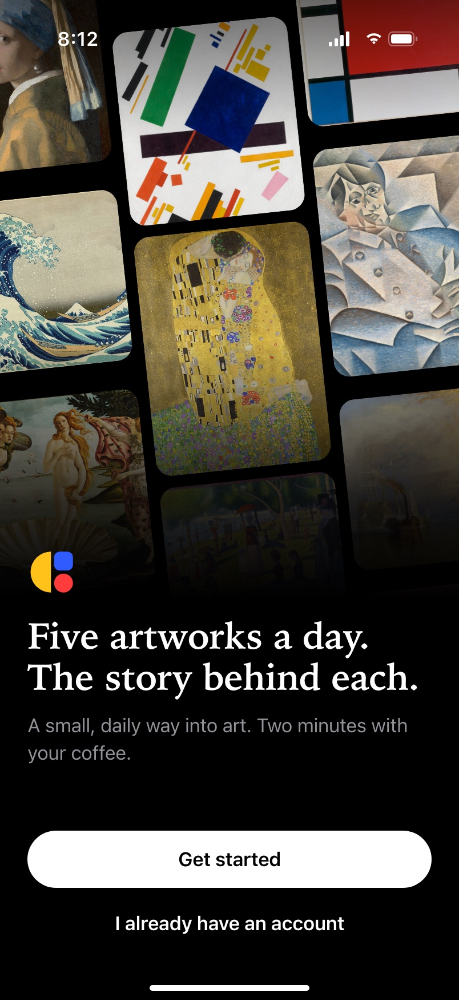

How do you want to read the case?
AMO brings five artworks a day for free, with a push at the time you pick. A short quiz tunes the five: how well you know art, which movements you like, when you want them. Today is a deck of cards: the artist of the day, then the artworks. A tap opens the painting whole, on black; the story slides up only when you want it. Any painting can become a wallpaper, a widget or a watch face. We dropped star ratings: judging someone's art as good or bad wasn't the point. The surprise was the widget: people kept it on the home screen just to see a new painting every day.
Walkthrough
One morning with AMO
- Push
- Today
- The painting
- The story
- Widget
8:30, the time picked in the quiz. The push brings today's five, and Today opens on the artist of the day. One swipe to the first painting, a tap to see it whole, then its story, a closer look, the artist and a new wallpaper. And the widget on the home screen.
01 · Context
Art as a habit, not a trip to a museum
- Own product
- Five a day
- Phone, widget, watch
The idea came from Sergey, one of the three of us: introduce people to art a little every day. Not a catalogue to browse, but a daily portion that comes to you.
Five artworks a day were free, with a push: here is your daily dose of art. Each came with its story. Around the feed: a home-screen widget, Apple Watch faces and wallpapers. Premium removed the daily limit.
02 · Onboarding
A quiz that tunes the five
- Three questions
- Level sets the story
- Time sets the push
Three short questions. How well do you know art: the answer sets how each story is told, from explaining terms to technique and context. Which movements do you like: the five lean towards them, with surprises mixed in. When should your daily art arrive: that is when the push comes.
People really did go through the quiz. It felt like part of the product, not a form before it.
03 · Today
A deck of cards, and the painting first
- Artist of the day
- Swipe for the five
- Tap to see it whole
Today is a deck. The first card is the artist of the day; swipe for the artworks. Neighbouring cards peek at the edges, so it is clear there is more.
A tap opens the painting itself: whole, on black, with nothing over it. Double-tap or pinch to see the brushwork up close. Turn the phone and a landscape painting fills the screen. The story waits below, one swipe away.

Turn the phone04 · The story
From a dry summary to three things to look at
- One line
- The facts
- Look closer
In the app the text under each painting was a dry summary from a university website: a block of facts few people read to the end. This is the part I would fix first, and the screens here show how.
The story slides up over the painting. One line says why it matters. The facts sit in chips: medium, size, where it hangs. Then “Look closer”: numbered points on the painting itself. Tap one and the painting zooms to that detail with a short note: the dots instead of strokes, the monkey on a leash. The artist page puts the life on one line and the works in order.
05 · Keep it close
Wallpaper, widget, watch face
- Wallpaper
- Widget
- Apple Watch
Any painting can stay with you: as a wallpaper, on the widget or as an Apple Watch face. One sheet shows all three as previews; the premium ones are marked, not hidden.
The push arrives at the time from the quiz, with the first painting already in it.
06 · Beyond the five
Discover, Collection and new artists
- From the quiz
- Saved works
- Studio
Discover starts from the movements picked in the quiz and from what you kept. Collection holds the saved works and artists.
Studio was our idea to show young and independent artists next to the classics: anyone could upload their work, and we would feature one artist a day. We didn't get to ship it, but it stays in the design: it is where a daily art habit could go next.
07 · Honest part
We dropped the ratings
- Star ratings
- Removed
Early on, after each artist, we asked people to rate how inspired they were, from one to five stars. We removed it. Rating someone's art as good or bad wasn't what AMO was for, and it turned a moment with a painting into a survey.
The paywall follows the same idea: free stays useful, five artworks every day, and Premium is for people who want more.

Paywall
Welcome08 · What we learned
The widget did more than the app
- Widget
- A painting a day
- ~5,000 a month
- #2 on Product Hunt
We didn't expect it: people loved the widget most. No text, nothing to tap, just a new painting on the home screen every day. They didn't treat it as a wallpaper; they looked at the paintings daily, and some saved them.
For a product about a daily habit, that was the clearest signal: the less we asked of people, the more art they saw. AMO reached around 5,000 people a month. At launch it was #2 Product of the Day on Product Hunt, and the widget was what commenters singled out.
Scale
AMO, screen by screen
- 18 screens
- Open full size
From the first launch to the widget. Open any of them full size.